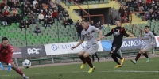
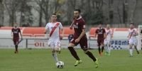
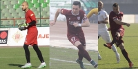
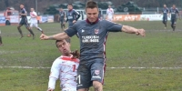
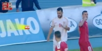

VIDEO: Izvještaj sa utakmice Sarajevo - Slavija 3:0
Almir Hurtić je drugi put ove sezone preuzeo stručni štab i ovaj mandat je započeo pobjedom protiv S...
Datum objave:
Gospodine Ješiću, da li je još rano za analizu?
 FK Sarajevo je ispalo iz Kupa BiH nakon najgore odigrane utakmice koju su navijači imali priliku da ...
FK Sarajevo je ispalo iz Kupa BiH nakon najgore odigrane utakmice koju su navijači imali priliku da ...
Datum objave:
VIDEO: Izvještaj sa utakmice Rudar (P) - Sarajevo 1:1
Remijem u Prijedoru sa Rudarom bordo tim je smanjio šanse na minimum za odbranu prošlosezonske titul...
Datum objave:
VIDEO: Izvještaj sa utakmice Sarajevo - Čelik 2:1

Zenički Čelik je na Koševu pružio dobru predstavu, ali up8rkos tome nisu uspjeli izdržati, jer je Har...
Datum objave:
Velkoski karijeru nastavlja u Incheonu
 Makedonski internacionalac, Krste Velkoski na Koševo je stigao u januaru 2014. godine. Nakon fantast...
Makedonski internacionalac, Krste Velkoski na Koševo je stigao u januaru 2014. godine. Nakon fantast...
Datum objave:
VIDEO: Izvještaj sa utakmice Zrinjski - Sarajevo 2:2

Nastavak prvenstva je obilježilo gostovanje SarajevA Zrinjskom u Mostaru, a na kraju je završilo 2:2...
Datum objave:
Delač, Duljević i Benko najbolje ocijenjeni

U tradicionalnoj anketi, koja se na završetku svake polusezone organizuje na našem...
Datum objave:
Benko izjednačio rekord Sušića i Antića

Sa 20 postignutih pogodaka u 2015. godini, Benko se izjednačio sa učinkom dvojice slavnih fudbalera...
Datum objave:
Kusturica: Postoje dvije mogućnosti za stadion
Edis Kusturica je otkrio planove Kluba sa kampom u Butmiru, kada će biti završeni travnati tereni te...
Datum objave:
Velkoski upisao deseti nastup za Makedoniju

Krste Velkoski je na Koševo stigao u januaru 2014. godine, a samo dva mjeseca kasnije upisao je svoj...
Datum objave:
VIDEO: Golijada na Koševu
 Iako su gosti uspjeli povesti sa 2:0, bordo tim se vratio u igru te golovima Duljevića i Amera Bekić...
Iako su gosti uspjeli povesti sa 2:0, bordo tim se vratio u igru te golovima Duljevića i Amera Bekić...
Datum objave:
Oproštajna utakmica za Obuću i Škoru
Gotovo da ne postoji nijedan mlađi navijač FK Sarajevo, koji prati ovaj klub u periodu nakon agresij...
Datum objave: